UDN
Search public documentation:
MasteringUnrealCinematicSequencesCH
English Translation
日本語訳
한국어
Interested in the Unreal Engine?
Visit the Unreal Technology site.
Looking for jobs and company info?
Check out the Epic games site.
Questions about support via UDN?
Contact the UDN Staff
日本語訳
한국어
Interested in the Unreal Engine?
Visit the Unreal Technology site.
Looking for jobs and company info?
Check out the Epic games site.
Questions about support via UDN?
Contact the UDN Staff
- 第 21 章：创建过场动画
- 什么是过场动画？
- 相机 Actor
- 相机效果
- DumpMovie 命令
- 总括
- 指南 21.1 游戏角色设置
- 指南 21.2 Kismet 初始设置
- 指南 21.3 阻挡游戏角色移动
- 指南 21.4 基本动画轨迹
- 指南 21.5 Camera1（第一相机）的设置与阻挡
- 指南 21.6 Camera 2（第二个相机）的设置与阻挡
- 指南 21.7 音乐轨
- 指南 21.8 镜头切换，第一部分：Cuts（剪辑）
- 指南 21.9 镜头切换，第二部分：Slomo（慢镜头）
- 指南 21.10 镜头切换，第三部分：Fades（淡入淡出效果）
- 指南 21.11 Camera1（第一相机）基础景深效果，第一部分：记录值
- 指南 21.12 Camera1（第一相机）基础景深效果，第二部分：设置关键帧
- 指南 21.13 Camera1（第一相机）镜头拉伸
- 指南 21.14 Camera1 高级景深效果，第一部分：DOF_FocusInnerRadius
- 指南 21.15 Camera1 高级景深效果，第二部分：DOF_BlurKernelSize
- 指南 21.16 Camera1（第一相机）镜头拉伸
- 指南 21.17 Camera2（第二相机）景深效果
- 指南 21.18 重点光照，第一部分：放置光源
- 指南 21.19 重点光照，第二部分：左后方亮度轨迹
- 指南 21.20 重点光照，第三部分：右后方亮度轨迹
- 指南 21.21 重点光照，第四部分：前方亮度轨迹
- 指南 21.22 爆炸粒子特效，第一部分：放置发射器
- 指南 21.23 爆炸粒子特效，第二部分：粒子触发轨迹
- 指南 21.24 爆炸光源，第一部分：放置光源
- 指南 21.25 爆炸光源，第二部分：亮度轨迹
- 指南 21.26 爆炸声音
- 指南 21.27 躲避动作的动画轨迹，第一部分：关键帧创建
- 指南 21.28 躲避动作的动画轨迹，第二部分：曲线调节
- 指南 21.29 附加动画轨迹，第一部分：关键帧放置
- 指南 21.30 附加动画轨迹，第二部分：曲线调节
- 指南 21.31 结束游戏角色的运动
第 21 章：创建过场动画
什么是过场动画？
过场动画 (cinematic sequence)，通常又被称为 cut-scene 或 Machinima。它实际上是在关卡或战斗任务之间作为间隔的短片，作为前一关卡的收场和下一关卡的序幕。通常，这些过场动画是完全非交互的，玩家无法在过场动画中控制情节的发生和游戏角色的动作。 过场动画使关卡设计师与艺术导演能够将他们的创意精确地展示在各位玩家眼前。虽然过场动画确实是关卡设计用以推动游戏角色成长、说明故事主线最常用最有效的方法，但是，这种方法也带来了相当大的挑战，特别是因为过场动画是完全非交互式的，激起并保持观众的兴趣是非常重要同时也是非常困难的。我们都会尽最大的努力避免过场动画沦为乏味的闲聊场面。当需要向玩家传达大量信息（如讲述任务目标或整个故事线索）时会变得更加困难。要保持情节的流畅性，吸引玩家的注意力（当他们不能控制画面时），一个有效的办法就是使屏面保持移动状态。可以通过移动 actor、移动相机和镜头切换（例如相机切换）的组合使用来实现屏面的移动。移动 actor
移动 actor 的含义是不言自明的。事实上，作为摄像师，您要在场景中不停移动游戏角色以防使游戏场景变得单调乏味。移动 actor 不仅在相机处于相对静止状态时可以使玩家感觉到并非无所事事，同时也为其它方法提供了条件，例如相机移动和镜头切换。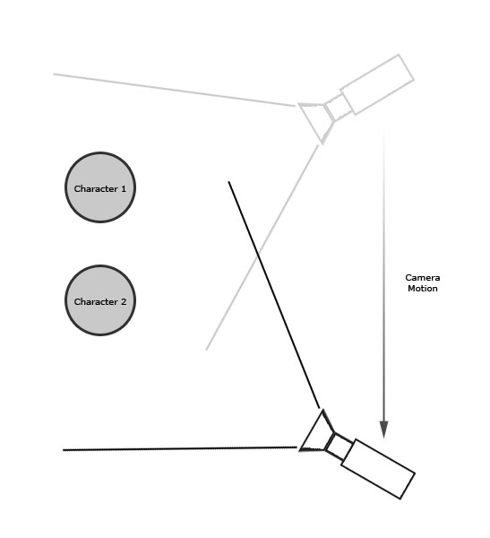
*图 21.1 - actor 在相机保持静止状态时的移动示意图。*
移动相机
移动相机是指在过场动画的空间中四处移动相机本身。这是在使用单个相机拍摄时，保持场景生动性的一种重要方法。它也为对场景中周遭环境的展示，使游戏角色能更好地融入场景提供了条件。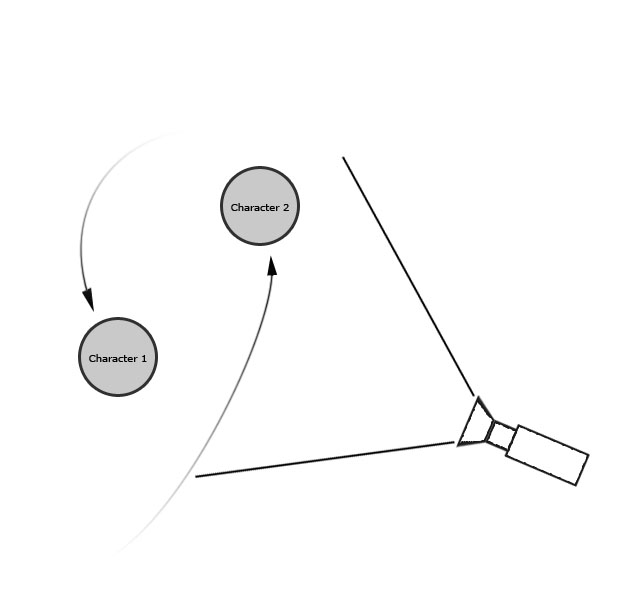
*图 21.2 - 相机四处移动甚至穿越整个游戏场景的示意图。*
镜头切换
镜头切换主要指使用镜头跳转，但也包括淡入淡出，拉伸镜头，甚至慢镜头的使用。无论是使用其中任何一种或是所有的剪辑技巧，都可以保持场景的移动，从而维持玩家的兴趣。在较大的场景中，游戏角色在空间中的分布更为分散，所以要移动 actor 或是移动相机使得焦点从其中一个游戏角色移到另一个身上是非常困难甚至是不可能的。在这种情形下，使用多个相机并在相机间进行镜头切换是非常实用的。
*图 21.3 - 多个相机跟踪游戏对象的示意图。使用镜头跳转可以在这些相机之间进行镜头切换。*
游戏中渲染与预渲染
镜头切换的其中一个为某些玩家所排斥而为另外一些玩家所推崇的方面在于，玩家需要对 in-game 过场动画和预渲染动画进行辨别。In-game 过场动画是使用游戏内置的美术资源和渲染引擎完成实时渲染的。预渲染过场动画则不同，它们通常是在3D软件中利用高分辨率美术资源创建并渲染的。最终制成的影片只是在游戏中回放一遍罢了。 随着 Unreal Engine 3 及其高质量的渲染系统的诞生，这两种渲染技术之间的界线已经变得模糊起来。使用 in-game 美术资源制作的 in-game 过场动画具有与高分辨率美术资源制成的现代影片同样高的视觉逼真度。Matinee 系统也已焕然一新，成为了非线性全效特征的编辑器。在过去，只能通过预渲染得到的高质量过场动画，现在可以在 UnrealEd 内部直接创建，并在游戏播放时更为简便地实时渲染了。 对于游戏开发者而言，这意味着游戏、游戏过场动画，连同过去用作宣传目的的动画一起，在如今都可以使用相同的美术资源，这样就节省了开发者闭门制作的时间花费或是外包给其它艺术工作室制作过场动画的经费。这也意味着，过场动画和实际的 gameplay 在视觉上不再有什么区别了。对于玩家而言，此问题历来都是至关重要的。商业宣传时使用的游戏广告看上去都惊人的逼真。而当玩家把游戏买回家开始运行时，才发现其画面与广告的画面完全不同。Unreal Engine 3 提供的强大性能已经使这一鸿沟成为了历史。相机 Actor
在 Unreal Engine 3 中，虚拟世界中的相机 actor 是与现实世界中的相机相对应的。当前活动的相机为已渲染场景提供了观察切入点。在 Matinee 中，摄影师轨迹 (Director Track) 可以制作出类似传统电影中镜头切换的跳转和淡入淡出部分。还可以通过镜头拉伸来特写某个特定区域或向玩家展示更多游戏场景。每个相机都有独自的一组后期处理设置，用以覆盖当前关卡中的后期处理设置，为仅针对每个相机单体设置独有效果提供了可能性。
*图 21.4 - 相机 actor。*
相机 Actor 属性
相机 actor 具有如下属性，可用于在游戏场景进行渲染时改变其外观。AspectRatio（幅型比）
该属性设置了已渲染场景的宽度和高度的比例。标准幅型比是 1.33，就是标准的电视机或电脑显示器的幅型比；宽屏的电视机或电脑显示器的幅型比为 1.78。bConstrainAspectRatio（强制屏幕幅型比）
该属性定义了是否将已渲染场景规定为 AspectRatio 属性中的幅型比。为多余的窗口空间加框，或者忽略窗口或相机的长宽比，直接填满整个窗口。FOVAngle（FOV 角度）
该属性定义了相机的视野或显示的角度量。调节该属性可以推近或拉远镜头。bCamOverridePostProcess（相机覆盖后期效果）
该属性若设置为 true，则当相机激活时，相机的 CamOverridePostProcess（相机覆盖后期效果）设置将覆盖当前的后期处理设置。 该属性若设置为 false，则 actor 的 CamOverridePostProcess（相机覆盖后期效果）设置将被忽略。CamOverridePostProcess（相机覆盖后期效果）
这是一组后期处理设置，由该相机的 bCamOverridePostProcess（相机覆盖后期效果）属性来决定本属性的生效与否。关于此设置的完整描述，请参见《第十九章：后期特效》。相机效果
现实世界与虚拟世界
如上所述，当您在创建过场动画时，主要是创建一个在游戏中展示在玩家面前的虚拟电影。要使这些虚拟电影看上去更加真实有趣，可以采取的一个办法是增加特效，如景深或运动模糊。在传统电影中，这些特效是通过相机和镜头的成像原理以及与场景的交互运动形成的。在 Unreal Engine 3 中，后期处理效果及其它特效也应用了电影制作师的方法，并将这些方法分解为很多个部分，以模仿电影的制作过程。在 Unreal Engine 3 中创建过场动画时，需要知道如何使用相机和电影制作特效。景深 (Depth of Field)
景深是指聚焦在某个深度上，同时使其它深度的不处于焦点上的物体显得模糊。这种方法可以将玩家的注意力吸引到场景中的某个区域中。它也可以用于创建通过未调焦的相机看到的场景效果，甚至是当玩家从睡梦或昏迷中醒来时，通过玩家的眼睛看到的场景效果。 在现实世界中，景深是由焦距比数（F-number，通常也称作 F-stops）或相对孔径决定的。焦距比数是指镜头组焦距和入射光孔直径的比例。增加焦距比数可以增加景深，但同时也减少了接收到的光线数量。 在 Unreal Engine 3 中，景深通过以下方法产生：渲染相机某个焦距（FocusDistance）上的物体，对于其它在 FocusInnerRadius 距离以外的物体，则应用逐级模糊的效果。和现实世界中的景深不同，Unreal Engine 3 中的景深不只局限于 Unreal Engine 3 内部的光源，但其主要原理和最终结果都是相同的。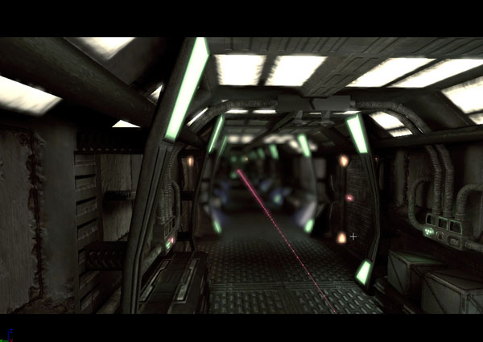
*图 21.5 - 该图展示了景深效果。*
运动模糊 (Motion Blur)
运动模糊对场景中与相机相对运动的物体沿运动方向进行模糊。这可以用于夸大场景中物体的运动数量，或向玩家凸显运动。还可以使生硬的相机运动变得更加真实自然。 在现实生活中，运动模糊决定于射入光线的数量和胶片曝光时间的长度。实质上，胶片记录下场景，也记录下一段时间内物体在场景中相对相机运动的位置。这段时间的长度由快门速度决定。这样，运动物体就产生了模糊。 在 Unreal Engine 3 中，为了使游戏以一个可以接受的帧速播放，多次渲染场景并把渲染后的场景组合到一幅图画上并不是可行的办法。取而代之的方法是，在运动物体的区域范围中，应用基于运动速度的逐级模糊；只要能够明智地应用它，就可以产生和标准运动模糊一样的效果。这种方法可以应用于场景中的单个运动物体上，或者整个场景上，例如当相机快速运动时。
*图 21.6 - 当物体经过相机前时，运动模糊使物体变得模糊。*
视野 (Field of View)
视野是指相机在某个时刻可以看到的角度范围和距离范围。调整视野可以放大场景中的某些区域，从而显示出细节或将玩家的注意力集中于某个地方。 对于现实世界中的相机，视野决定于胶片的大小、镜头组的焦距长度以及镜头引起的扭曲数量。镜头通常按照其视野进行分类，如广角镜头、远距镜头。可以在不同类型的镜头之间进行切换得到不同的视野。还有变焦镜头，其焦距可以调节产生放大或缩小的效果。 在 Unreal Engine 3 中，每个相机都有其视野设置，叫做 FOV。该属性的值代表了相机可见的距离范围，和真实的相机一样。在过场动画中，相机的 FOV 可以调整，以放大游戏角色或需要玩家注意的区域。增大 FOV 会使区域缩小，减小 FOV 会使区域放大。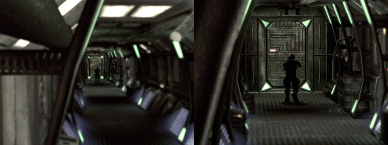
图 21.7 - 两张截图显示了通过调整相机FOV值放大区域的效果。
屏面特效 (Scene Effects)
屏面特效用于改变场景的颜色范围、饱和度和对比度。它是在您的过场动画序列中营造氛围或气氛的绝佳方法。可以使用屏面特效制作深褐色色调的画面，甚至简洁的黑白画面。它们可以应用于倒叙时产生时间切换的感觉，或唤起怀旧之情。屏面特效的应用实际上是无穷无尽的。 对于传统的相机和胶片，以上的这些效果是通过冲洗时直接处理胶片或使用过滤镜头制作的。有各种各样滤镜用于滤掉一些颜色，加强一些颜色，增加对比度或完成其功能。 在 Unreal Engine 3 中，设计师可以控制相机 actor 的红、绿、蓝通道，SceneShadows，高光区域，SceneHighlights，还可以单独提升或抑制颜色成分。通过在 SceneMidtones 属性中控制 gamma 曲线，可以修改对比度。通过 SceneDesaturation 属性，可以降低整个场景的饱和度。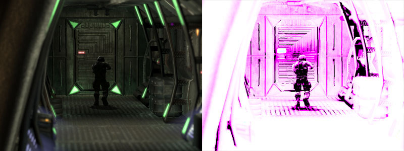
*图 21.8 - 左边为原图；右边的图在原图基础上应用了屏面特效。*
利用光照进行图像分离
随着 Unreal Engine 3 图形处理能力的增强，在不同表面上产生的光照效果越来越谐调，将游戏角色和环境融入同一个场景中也越来越容易。有时，游戏角色非常完美地融入场景中，反而变得不容易区分了。在这种情形下，将游戏角色和环境区分开来变得非常重要。可以通过不着痕迹的光照提示，如镶边光照来达到这样的效果。 镶边光照即通过使用加强光线或阴影设置来突出显示游戏角色的轮廓。这不仅制作出更加美妙的视觉效果，还将游戏角色从场景中凸显出来，使他们成为场景的焦点。不过，效果必须控制得非常精妙，过多的镶边光照会破坏画面的真实感。DumpMovie 命令
Unreal Engine 3 提供了以下功能：将过场动画的各个帧渲染成单独的图像文件，可以使用外部软件将这些图像文件合并成一个电影文件。单独的电影文件可以放在因特网上或合入商业广告中，以便对游戏进行推广，当然必须是合法的游戏版本。只要创建了过场动画，这个过程就非常简单了。您所要做的就是通过命令行运行游戏的可执行文件，命令行包括过场动画所在的贴图文件的名称，随后是 -dumpmovie 命令。然后，在游戏的 Screenshots 文件夹中，每个帧将产生一个 .BMP 图形文件。也可以使用 -benchmark 命令以限制游戏以每秒 30 帧的速度播放。如果需要，还可以通过 -ResX= 和 -ResY= 命令来指定游戏运行时的分辨率。整个命令行格式如下： ExampleGame CinematicsDemo -dumpmovie -benchmark -resx=1280 -resy=720 该命令将运行 ExampleGame ，并且使创建每个帧的画面时，CinematicsDemo 贴图的分辨率为 1280x720，速度为每秒 30 帧。总括
Unreal Engine 3 使用了本章中提及的工具、技巧和特效，再加上良好的电影制作感觉和舞台戏剧的灵感，最终形成了具有丰满的游戏角色形象，刺激的 gameplay 体验，以及通过设计师之手制作出的电影级别的视觉效果的迷人故事。过场动画可以形成场景之间的过渡，合入场景中，或者作为帧进行渲染，合入另一个单独的电影中。事实上这些仅受限于您自己的想像力和创造力。指南 21.1 游戏角色设置
在以下一系列指南中，我们将创建一个过场动画。在这个过场动画中，游戏角色将顺着走廊跑下去。一路上会发生四次爆炸，将玩家炸开。该序列中有两次镜头切换，并使用了淡入淡出和 slomo（慢动作）。我们还会自定义相机 actor 的一些属性，如景深后期处理设置、视野或 FOV。整个游戏还配上了音乐，更具电影氛围。 1. 打开 Cinematics_Demo 地图。该地图是我们将要创建的过场动画的场景。在该贴图中，有一条长长的走廊，游戏角色将沿着这条走廊奔跑，然后被爆炸炸开。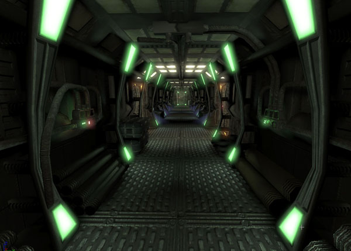
图 21.9 - 贴图展现了一个相对简单的走廊。 2. 首先要做的事是将游戏角色放到关卡中。我们将使用一个叫做 SkeletalMeshActorMAT 的特殊 Actor，它允许使用 Matinee 中的混合动画。在通用浏览器中的 COG_Grunt 文件包中选择 COG_Grunt_AMesh 资源。然后，在 Perspective（透视）视窗中，右击走廊的地板，选择 Add Actor -> SkeletalMeshActorMAT：SkeletalMesh COG_Grunt.COG_Grunt_AMesh，放置 Actor。 注意： 关于混合动画主题的深入介绍，请参见《第二十章：动画系统》。
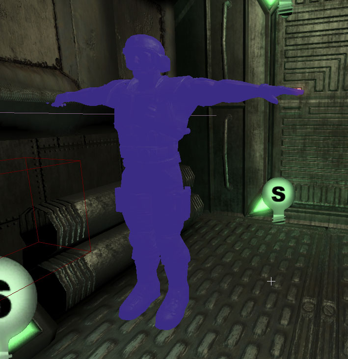
*图 21.10 -在关卡中放置 actor。* 3. 移动游戏角色的枢轴，将游戏角色放在走廊的中央。请注意这样会使游戏角色显得离走廊一边很远。 4. 选中 actor，按 F4 打开其属性。 5. 在 Movement 中，将 Physics 属性设置为 PHYS_Interpolating。这非常有必要，因为后面我们要使用 Matinee 来控制游戏角色的运动。 6. 6. 展开 SkeletalMeshActor，然后展开 LightEnvironment，选择 LightEnvironmentComponent 下的 bEnabled 属性。 7. 在 SkeletalMeshActor 下，展开 SkeletalMeshComponent，向下拉动滚动条至 SkeletalMeshComponent 子区域。 8. 从通用浏览器中的 CinematicsDemoContent 文件包中选择 animTree_Grunt 资源。然后为 AnimTree 属性单击 Use Current Selection in Browser 按钮。AnimTree 属性设置成允许使用混合动画。 9. 现在，将 actor 放在俯视口中的走廊的尽头。在 Y 轴上为走廊的中间，在 X 轴上距走廊一端的距离为 144 个单位。同样地，向上移动游戏角色栅格，使其双腿在走廊的地板上平衡。然后旋转游戏角色，使它面向走廊的另一头。 确定栅格的枢轴位于走廊的中央，而非栅格。如果位置正确，您几乎看不到游戏角色的手穿过墙壁。
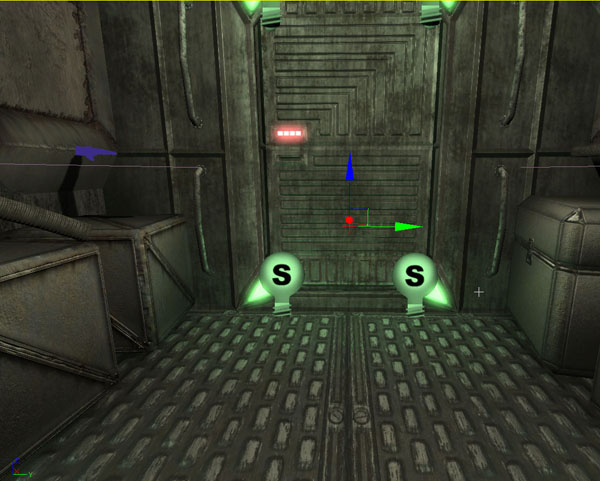
图 21.11 - 网格物体的枢轴位于走廊的中央；您几乎看不到游戏角色的手穿过墙壁。 10. 保存地图保留您的工作进度。 <<<< 指南结束 >>>>
指南 21.2 Kismet 初始设置
1. 继续上一指南，打开 Cinematics_Demo 地图。 2. 我们需要在 Kismet 中建立一个网络，以控制 Cinematic Mode 的开和关，播放 Matinee 序列，并且在动画完成后隐藏带骨骼的网格物体。在 Kismet 中，右击工作区。选择 New Event -> Level Startup。FIGURE 21.12 – Add a Level Startup. 3. 3. 在 Level Startup 事件右边右击，选择 New Action -> Toggle -> Toggle Cinematic Mode，添加一个 Toggle Cinemtaic Mode 动作。该动作的默认属性设置即可满足我们的要求。它将使玩家的所有输入和动作失效，并隐藏玩家的栅格和 HUD。
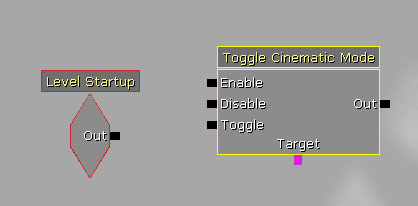
图 21.13 - 该节点将初始化 Cinematic Mode。 4. 右击，选择 New Variable -> Object -> Player，创建一个新的 Player 变量。将 Player 变量连接至 Toggle Cinematic Mode action 的 Target 端。
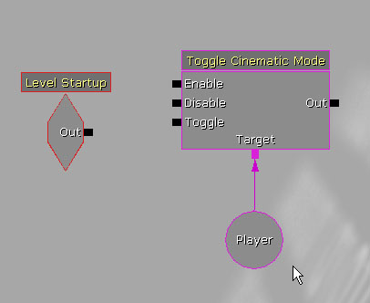
图 21.14 - 新建 Player 变量的连接。 5. 将 Level Startup 事件的 Out 端连接至 Toggle Cinematic Mode 动作的 Enable 端。
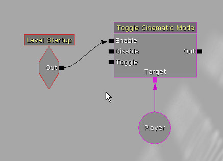
图 21.15 - 如图所示连接节点。 6. 在 Toggle Cinematic Mode 动作的右边右击，选择 New Matinee 创建一个新的 Matinee 序列。将 Toggle Cinematic Mode 的 Out 端连接至 Matinee 的 Play 端。

图 21.16 - 创建并连接新的 Matinee 序列。 7. 选择 Toggle Cinematic Mode 和之前创建的 Player 变量，按 Ctrl + C 和 Ctrl + V 进行复制。取消所有和 Matinee 序列的连接，将复制的物体移动至 Matinee 的右边。这样将取消隐藏玩家的栅格和 HUD，并恢复输入和动作，回到正常的游戏状态。
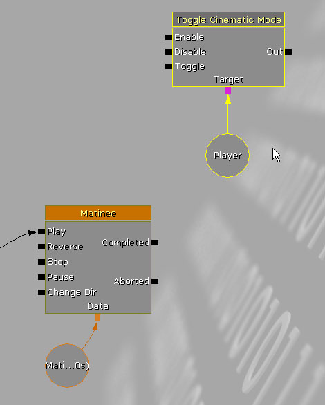
*图 21.17 - 复制并放置 Toggle Cinematic Mode 和 Player 变量。* 注意：随着我们增加新的组和轨迹，matinee 序列模块的尺寸将变大很多。所以，最好将 matinee 序列物体或所有的子序列物体分开放置，避免相互重叠。 8. 将 Matinee 的 Completed 端连接至新建的 Toggle Cinematic Mode 的 Disable 端。 9. 在 Toggle Cinematic Mode 动作的右边右击，选择 New Action -> Teleport。将它连接至新建的 Toggle Cinematic Mode 的 Out 端，并将 Player 变量连接至 Teleport 的 Target 端。Teleport 会把玩家的栅格放置在过场动画结束时栅格应在的位置。

*图 21.18 - 创建并连接 Teleport 节点。* 10. 在视口中，选择 SkeletalMeshActorMAT。然后，右击 Teleport 动作的 Destination 端，选择 New Object Var Using SkeletalMeshActorMat_0。
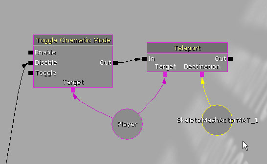
图 21.19 - Teleport 应与带骨骼的网格物体相连。 11. 在 Teleport 动作的右边右击，选择 New Action -> Toggle -> Toggle Hidden，创建一个 Toggle Hidden 动作。这样将隐藏带骨骼的网格物体，使它不再显现。 12. 将 Teleport 动作的 Out 端连接至 Toggle Hidden 动作的 Hide 端。然后，将 SkeletalMeshActorMAT_0 变量连接至 Toggle Hidden 动作的 Target 端。

图 21.20 - 如此设置将隐藏带骨骼的网格物体。 13. 保存地图保留您的工作进度。 <<<< 指南结束 >>>>
指南 21.3 阻挡游戏角色移动
1. 继续上一指南，打开 Cinematics_Demo 地图。 2. 在视口中选中 SkeletalMeshActorMAT，打开 Kismet。然后，双击 Matinee 序列打开 Matinee 编辑器。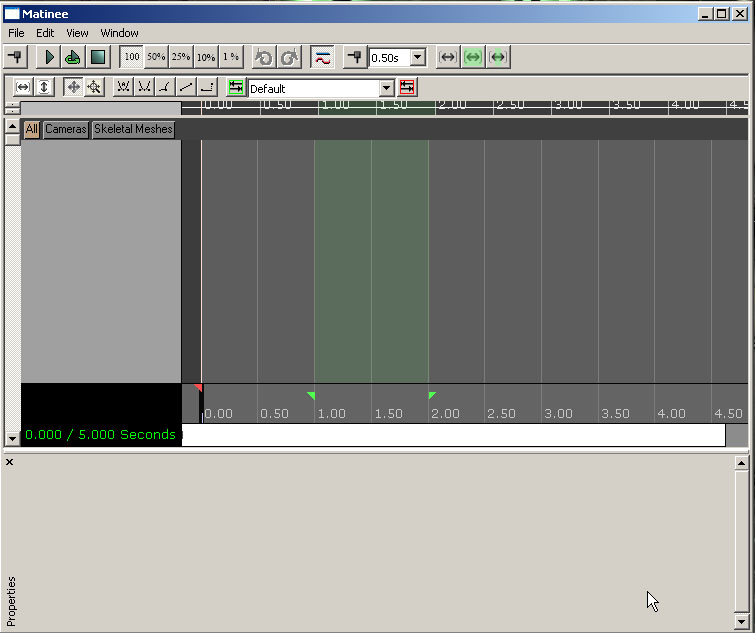
*图 21.21 - Matinee 编辑器。* 3. 在组/轨迹列表中右击，选择 Add New Group 创建一个新组。在弹出的对话框中，将新建的组命名为 Grunt，单击 OK。这样，将创建一个新组以及与它连接的 actor，并且该组内的任何轨迹都会影响我们前面放置的 SkeletalMeshActorMAT。

*图 21.22 - 创建一个名为 Grunt 的新组。* 4. 右击刚才新建的 Grunt 组，选择 Add New Movement Track。在 Grunt 组中加入了一个新的轨迹，在 Time=0.0 时刻设置了一个初始关键帧值。

图 21.23 — 添加一个新的运动轨迹。 5. 将序列终止标记（红色小三角形）设置到 Time=13.0 时刻。这样就将序列的长度设置为 13 秒了。 6. 将时间轴滑块移动至 Time=10.0，按 Enter 键在该时刻放置一个新关键帧。右击该关键帧，选择 Interp Mode -> Linear。这样，将使 actor 在动画中以一个恒定不变的速度移动，而不会按直入直出的S形曲线变化。 7. 单击新建的关键帧使其处于选中状态，使编辑器进入关键帧编辑状态。要验证是否处于该状态，检查视口的左下角是否有“ADJUST KEY 1”字样，或者 Matinee 编辑器的左下角是否有“? KEY 1”位于 Matinee 编辑器的左下角。 8. 在视口中，SkeletalMeshActorMAT 将被自动选中。在俯视口中，将 actor 拖至走廊的另一端。在视口中将出现一条线，代表 actor 在 Matinee 序列中的运动轨迹。
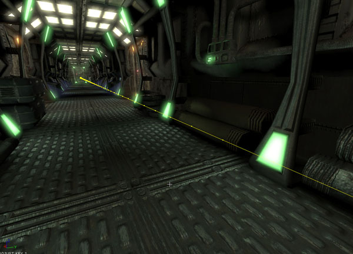
*图 21.24 - 将出现一条代表栅格运动轨迹的线。* 9. 时间轴滑块处在序列开始处，在 Matinee 序列中按下 Play 按钮，预览 SkeletalMeshActorMAT 的运动。SkeletalMeshActorMAT 将从走廊的一端匀速运动到另一端。 注意： 您还需要在Matinee中移动循环标记对（绿色小三角形），以使 SkeletalMeshActorMAT 在整个序列中播放。 10. 保存地图保留您的进度。 <<<< 指南结束 >>>>
指南 21.4 基本动画轨迹
1. 继续上一指南，打开 Cinematics_Demo 地图。 2. 打开 Kismet，双击 Matinee 序列，打开 Matinee 编辑器。 3. 我们将在整个序列中播放一个基本的动画轨迹，稍后混合到其他动画中。在本指南中，我们将创建这个基本动画，后面再加入其它动画。 在通用浏览器的 COG_Grunt 文件包中选中 COG_Grunt_BasicAnims 资源。然后，在 Matinee 中选中 Grunt 组，在其属性的 GroupAnimSets 陈列中添加两个新项。为“[0]”行单击“Use Current Selection In Browser”按钮。
图 21.25 - 向 GroupAnimSets 属性的“[0]”行添加基本动画。 4. 然后，在 Generic Browser 的 COG_Grunt 文件包中选中 COG_Grunt_EvadeAnims 资源。为“[1]”行单击“Use Current Selection In Browser”按钮。 5. 右击 Grunt 组，选择 Add New Anim Control Track。从出现的对话框的列表中选择 FullBody，单击 OK。

图 21.26 - 新建一个动画控制轨迹。 6. 时间轴滑块位于 Time=0.0 时刻，按 Enter 键添加一个关键帧。从出现的对话框的列表中选择 Run_Fwd_Rdy_01 动画，单击 OK。该动画看上去是一条沿序列长度的蓝色横条。 7. 右击新关键帧，选择 Set Looping。该动画看上去是一条沿序列长度的横条。 8. 单击轨迹右下角的小方块，将轨迹的曲线信息传递至曲线编辑器中。单击工具栏中的 Toggle Curve Editor 按钮，打开曲线编辑器。 9. 曲线信息可以图示所播放的动画的权重。按住 Ctrl 键，单击 Time=0.0 时刻的曲线添加一个点。右击该点，选择 Set Value。设置键值为 1.0。这样将会使这个动画具有完全权重。
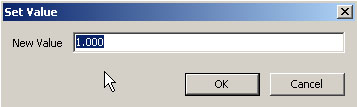
图 21.27 - 将值设为 1.0。 10. 在 Perspective（透视）视口中确保实时预览为可用状态。在 Matinee 中单击 Play 按钮。这样，在沿走廊移动的同时，游戏角色也会做跑步的动作了。
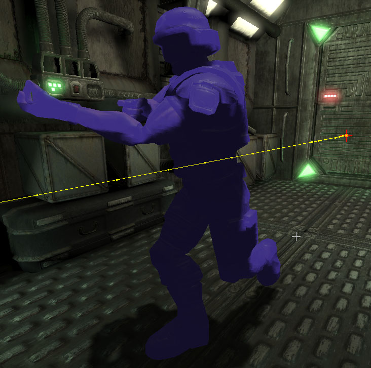
图 21.28 - 游戏角色可以奔跑了。 11. 保存地图保留您的进度。 <<<< 指南结束 >>>>
指南 21.5 Camera1（第一相机）的设置与阻挡
1. 继续上一指南，打开 Cinematics_Demo 地图。 2. 打开 Generic Browser，选择 Actor Classes 选项卡。从列表树中选择 CameraActor 类，在视口中右击，选择 Add CameraActor Here。
图 21.29 - 放置一个新的相机 actor。 3. 将相机放置于走廊游戏角色起跑的那一端，位于门上方、游戏角色左边的管道下面。旋转相机，使其面向走廊的另一端。在俯视口中，相机是朝左的。

图 21.30 - 如图所示放置相机。 4. 相机处于选中状态，按 F4 打开其属性。在 Camera 区域中，勾选 bCamOverridePostProcess 属性，去勾选 bConstrainAspectRatio 属性。 5. 展开 CamOverridePostProcess，进行以下设置：
- bEnableDOF: True
- bEnableMotionBlur: True
- BloomScale: 0.5
- DOF_BlurKernelSize: 4.0
- DOF_FocusInnerRadius: 750.0
- MotionBlur_Amount: 4.0
- MotionBlur_FullMotionBlur: False
- Scene_Desaturation: 0.425
- Scene_Highlights:
- X: 0.7
- Y: 0.8
- Z: 0.9
- Scene_MidTones:
- X: 1.2
- Y: 1.1
- Z: 1.0
- Scene_Shadows:
- X: 0.0
- Y: 0.005
- Z: 0.01
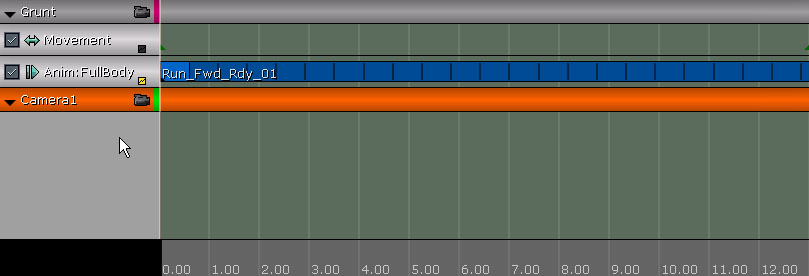
图 21.31 - 新建一个名为 Camera1 的组。 8. 右击 Camera1 组，选择 Add New Movement Track。

图 21.32 - 为相机创建一个运动轨迹。 9. 在运动轨迹的属性中，进行以下设置：
- LookAtGroupName: Grunt
- RotMode: IMR_LookAtGroup
指南 21.6 Camera 2（第二个相机）的设置与阻挡
1. 继续上一指南，打开 Cinematics_Demo 地图。 2. 利用您目前已掌握的技巧，创建另一个 CameraActor。将它放置在走廊另一端的门上方。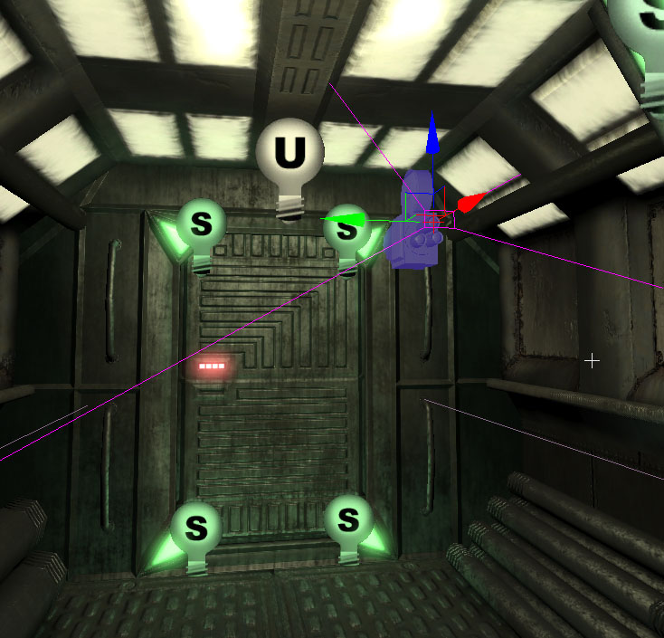
图 21.33 - 新建的相机向后拍摄。 3. 相机处于选中状态，按 F4 打开其属性。在 Camera 区域中，勾选 bCamOverridePostProcess 属性，去勾选 bConstrainAspectRatio 属性。 4. 展开 CamOverridePostProcess，进行以下设置：
- bEnableDOF: True
- bEnableMotionBlur: True
- BloomScale: 0.5
- DOF_BlurKernelSize: 4.0
- DOF_FocusInnerRadius: 750.0
- MotionBlur_Amount: 4.0
- MotionBlur_FullMotionBlur: False
- Scene_Desaturation: 0.425
- Scene_Highlights:
- X: 0.7
- Y: 0.8
- Z: 0.9
- Scene_MidTones:
- X: 1.2
- Y: 1.1
- Z: 1.0
- Scene_Shadows:
- X: 0.0
- Y: 0.005
- Z: 0.01

*图 21.34 - 新建一个名为 Camera2 的组。* 7. 右击 Camera2 组，选择 Add New Movement Track。

*图 21.35 - 向组内添加一个轨迹。* 8. 在运动轨迹的属性中，进行以下设置：
- LookAtGroupName:
- GruntRotMode: IMR_LookAtGroup
指南 21.7 音乐轨
1. 继续上一指南，打开 Cinematics_Demo 地图。 2. 我们的基本设计已初见雏形：游戏角色从走廊的一端移动至另一端时，两个相机将跟随他的运动。现在，我们要设置一段音乐，作为过场动画的配乐。这将成为为事件计时的基础。 在 Generic Browser 中，从 CinematicDemo 文件包内选择 cinematic_scoreCue 资源。 3. 打开 Kismet，双击 Matinee 序列打开 Matinee 编辑器。右击组/轨迹列表的空白区域，选择 Add New Group。将新建的组命名为 Score，单击 OK。
*图 21.36 - 创建一个名为 Score 的新组。* 4. 右击 Score 组，选择 Add New Sound Track。 5. 时间轴滑块位于 Time=0.0时刻，按 Enter 创建一个新关键帧。这时，会出现一个绿色横条，其长度代表了配乐的长度，横条的起点位置将显示配乐的名称。

图 21.37 - 您可以显示出配乐的长度。 6. 选中关键帧，右击。选择 Set Sound Volume。设音量为 2.0。 7. 在 Matinee 中按 Play 按钮播放序列。现在，配乐将和序列一起播放了。您将注意到配乐中有一些显著不同的部分。在下一指南中，这将作为进行相机剪裁的提示。 8. 保存地图保留您的进度。 <<<< 指南结束 >>>>
指南 21.8 镜头切换，第一部分：Cuts（剪辑）
1. 继续上一指南，打开 Cinematics_Demo 地图。 2. 打开 Kismet，双击 Matinee 序列打开 Matinee 编辑器。 3. 右击组/轨迹列表的空白区域，选择 Add New Director Group。将添加一个名为 DirGroup 的新组，其中还包括一个 Director 轨迹。该轨迹将用于为过场动画创建镜头切换。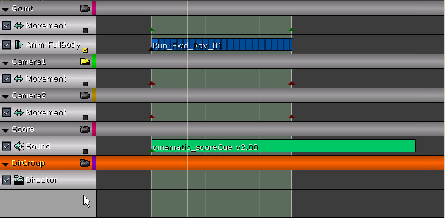
图 21.38 - 创建一个新的 Director 轨迹。 4. 播放序列数次，记下音乐发生改变的位置。这些改变大致应该为 Time=3.7 和 Time=5.8。在这两个位置上，我们将放置相机剪裁的关键帧。 5. 时间轴滑块位于 Time=0.0 的位置，选中 Director 轨迹，按 Enter 创建一个新关键帧。在弹出的对话框中，从下拉菜单中选择 Camera1 组，单击 OK。这将在序列开始时，激活与附于 Camera1 组的相机。 6. 将时间轴滑块移动至 Time=3.7（或尽可能靠近。精确的位置可以在创建后再设置），按 Enter 再次创建一个新关键帧。这次，从下拉菜单中选择 Camera2 组，单击 OK。

图 21.39 - 现在切换至 Camera2。 7. 选中新建的关键帧，右击。选择 Set Time，将关键帧的时刻设置为 3.7。 8. 将时间轴滑块移至 Time=3.7（或尽可能接近该时刻），按 Enter 创建一个新关键帧。在下拉菜单中选择 Camera1 组，单击 OK。 9. 选中新建的关键帧，右击。选择 Set Time，将关键帧的时刻设置为 5.8。
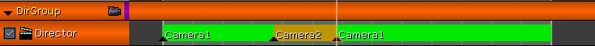
图 21.40 - 在 Time=5.8 时刻，将切换回 Camera1。 10. 单击 DirGroup 的相机图标，在 Matinee 中单击 Play 按钮播放。确定在 Perspective（透视）视口中，打开了实时预览。您可以看到，开始从第一个相机的角度播放序列，然后切换至第二个相机，最后又切换至第一个相机。 11. 保存地图保留您的工作进度。 <<<< 指南结束 >>>>
指南 21.9 镜头切换，第二部分：Slomo（慢镜头）
1. 继续上一指南，打开 Cinematics_Demo 地图。 2. 打开 Kismet，双击 Matinee 序列打开 Matinee 编辑器。 3. 右击 DirGroup 组，选择 Add New Slomo Track。该轨迹可以完成以下作用：当 Camera2 相机激活时，动画序列中的动作变为慢动作。
图 21.41 - 添加一个新的 Slomo 轨迹。 4. 时间轴滑块位于 Time=0.0 的位置，按 Enter 创建一个新关键帧。该关键帧即 Slomo 轨迹的初始关键帧。 5. 选中关键帧，右击，选择 Set Value。关键帧值应该默认为 1.0，如果不是，请将关键帧值设置为 1.0。
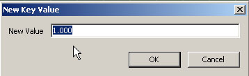
图 21.42 - 验证初始关键帧的键值是否为 1。 6. 再次右击关键帧，选择 Interp Mode -> Constant。这将使轨迹的曲线保持为初始关键帧值，直至它到达下一个关键帧。 7. 将时间轴滑块移至 Time=3.7（或尽可能接近该时刻），按 Enter 创建一个新关键帧。 8. 选中新建的关键帧，右击。选择 Set Time，将关键帧的时刻设置为 3.7。 9. 再次右击关键帧，选择 Set Value。将该键值设置为 0.2。这将使场景中的动作按正常速度的 20% 进行播放。
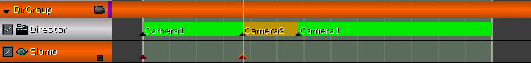
图 21.43 - 在 Time=3.7 时刻将出现慢动作。 10. 再次右击关键帧，选择 Interp Mode -> Constant。 11. 将时间轴滑块移至 Time=3.7（或尽可能接近该时刻），按 Enter 创建一个新关键帧。 12. 选中新建的关键帧，右击。选择 Set Time，将关键帧的时刻设置为 5.8。 13. 再次右击关键帧，选择 Set Value。将该键值设置为 1.0。

图 21.44 - 在 Time=5.8 时刻，速度会恢复正常。 14. 确定在 Perspective（透视）视口中打开了实时预览，在 Matinee 中单击 Play 按钮。当相机切换为第二个相机时，游戏角色的速度将变慢，但是音乐仍以正常速度播放。 15. 保存地图保留您的工作进度。 <<<< 指南结束 >>>>
指南 21.10 镜头切换，第三部分：Fades（淡入淡出效果）
1. 继续上一指南，打开 Cinematics_Demo 地图。 2. 打开 Kismet，双击 Matinee 序列打开 Matinee 编辑器。 3. 右击 DirGroup 组，选择 Add New Fade Track。该轨迹将用于在序列起始位置和结束位置产生淡入淡出的效果。
图 21.45 - 创建一个新的 Fade 轨迹。 4. 时间轴滑块位于 Time=0.0 的位置，按 Enter 创建一个新关键帧。这将为 Fade 轨迹设置一个初始值。 5. 关键帧值应设置为 0.0，这意味着默认场景完全可见。我们需要使场景完全不可见。选中关键帧，右击，选择 Set Value。将键值设置为 1.0。
图 21.46 - 开始时，场景漆黑一片。 6. 将时间轴滑块移至 Time=1.0，按 Enter 按钮创建一个新关键帧。选中关键帧，右击。选择 Set value，将关键帧值设置为 0.0。

图 21.47 - 在 Time=1.0 处，场景将淡出。 注意： 在本指南中，对关键帧的位置要求没有前面的指南严格。不过，您也可以使用 Set Time 功能。方法是，右击，在右键菜单中进行精确的时间设置。 7. 将时间轴滑块移动至 Time=9.5，按 Enter 创建一个新关键帧。这将成为淡出的起始点。该关键帧的键值应默认为 0.0，正如我们所需。要完全确保正确，也可以右击该关键帧，选择 Set Value，将值设置为 0.0。 8. 将时间轴滑块移动至 Time=11.0，按 Enter 创建轨迹的最后一个新关键帧。选中关键帧，右击。选择 Set value，将键值设置为 1.0。 9. 在 Perspective（透视）视口中确保实时预览为可用状态。在 Matinee 中单击 Play 按钮。序列开始时，场景会淡入；序列结束时，场景会淡出。 10. 保存地图保留您的进度。 <<<< 指南结束 >>>>
指南 21.11 Camera1（第一相机）基础景深效果，第一部分：记录值
1. 继续上一指南，打开 Cinematics_Demo 地图。 2. 打开 Kismet，双击 Matinee 序列打开 Matinee 编辑器。 3. 在本指南中，我们将创建一个轨迹以控制 Camera1 的 DOF_FocusDistance 属性。这样，游戏角色在沿走廊移动时，相机可以聚焦在游戏角色身上。要达到这个目的，我们需要知道游戏角色和相机之间的距离。可以创建一个简单的 Kismet 网络来显示该距离。在本指南中，设置 Matinee 轨迹的值时，这些值会作为参考指导。 右击 Camera1 组，选择 Add New Float Property Track。弹出一个对话框，从属性下拉列表中选择 DOF_FocusDistance，单击 OK。这将创建一个名为 Camera_DOF_FocusDistance 的新轨迹。
图 21.48 - 创建一个新的浮动属性轨迹。 注意： 如果对话框太小而导致属性列表中的字模糊不清，需要调整对话框的大小。 4. 在放置关键帧之前，要为这些关键帧指定值。如前所述，使用 Kismet 中的一个网络可以提供一些参考值，而免于猜测。 在 Kismet中Level Startup 事件的右上方，右击，选择 New Action -> Actor -> Get Distance，创建一个名为 Get Distance 的动作。
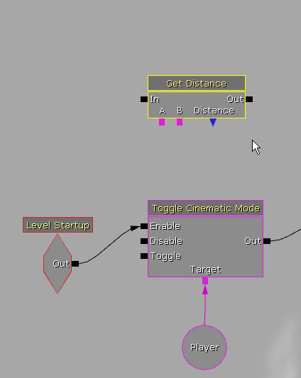
图 21.49 - 添加一个新的 Get Distance 动作。 5. 将 Level Startup 事件的 Out 端连接至 Get Distance 动作的 In 端。
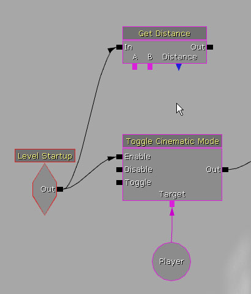
图 21.50 - 连接 Level Startup 和 Get Distance。 6. 在视口中选中 CameraActor_0，或第一个相机。然后，右击 Get Distance 动作的A端，选择 New Object Var Using CameraActor_0。
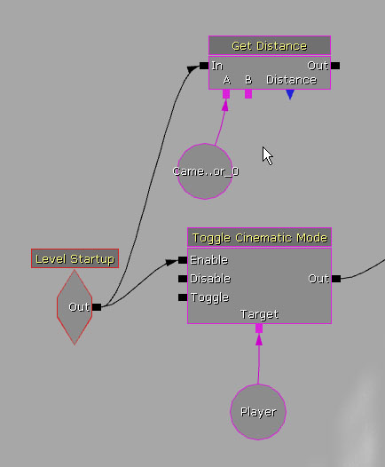
图 21.51 - 为第一个相机添加一个新的变量。 注意： 实际相机 actor 的名称可能会和这里的范例有所不同。只需确定选择中创建的第一个相机即可。 7. 回到视口中，选中 SkeletalMeshActorMAT 或游戏角色，右击 Get Distance 动作的 B 端，选择 New Object Var Using SkeletalMeshActorMAT_0。
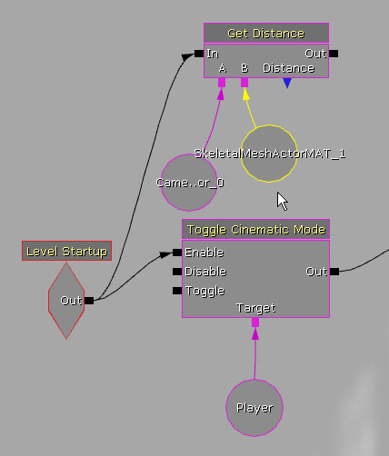
图 21.52 - 现在您可以得到带骨骼的网格物体和 Camera1 之间的距离了。 8. 然后，右击 Get Distance 动作的 Distance 端，选择 Create New Float Variable。
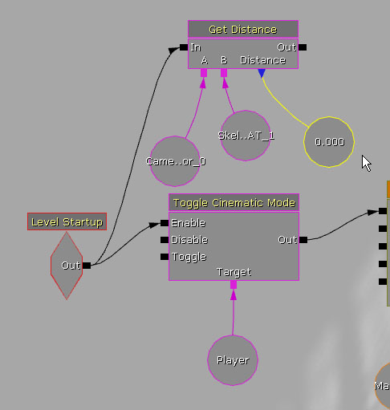
图 21.53 - 为 Get Distance 创建一个新的浮动变量。 9. 按住L键的同时，Get Distance 动作的右方，创建一个新的名为 Log 的动作。右击 Log 动作，选择 Expose Variable -> Float。Float 连接端应该在 Log 动作上可见。 10. 将 Log 动作的 Float 端连接至与 Get Distance 动作的 Distance 端相连的浮动变量。 11. 然后，将 Get Distance 动作的 Out 端连接至 Log 动作的 In 端。 12. 现在，将 Log 动作的 Out 端连接至 Get Distance 动作的 In 端，形成一个环形。右击 Log 动作的 Out 连接端，并选择 Set Activate Delay（设置激活的延迟时间）。将连接的延迟时间设置为 0.2。

图 21.54 - 现在可以将距离的值记录在屏幕上了。 13. 最后，在编辑器中运行关卡，记下关键时间点的距离值，如序列刚开始游戏角色正对着相机时，第一次相机切换时，第二次相机切换时，以及序列终止时。这里有一些值可供与您记录的值进行对照：它们应该比较接近。
- 600.0
- 200.0
- 900.0
- 1850.0
- 2600.0
指南 21.12 Camera1（第一相机）基础景深效果，第二部分：设置关键帧
1. 继续上一指南，打开 Cinematics_Demo 地图。 2. 打开 Kismet，双击 Matinee 序列打开 Matinee 编辑器。 3. 在本指南中，我们将使用在上一指南中收集到的值来创建轨迹中的关键帧。该轨迹用于控制第一个相机 DOF_FocusDistance 属性。随时可以替换您自己所记录的值。 选中 Camera1 组的 Camera_DOF_FocusDistance 轨迹。时间轴滑块位于 Time=0.0 的位置，按 Enter 创建一个初始关键帧。右击新关键帧，选择 Set Value。设置键值为 600.0。
图 21.55 - 将第一个关键帧的值设置为 600.0。 4. 将时间轴滑块移动至 Time=1.5，按 Enter 创建一个新关键帧。右击该关键帧，选择 Set value。设置键值为 200.0。 5. 将时间轴滑块移动至 Time=3.7 或第一次相机切换的位置，按 Enter 创建一个新关键帧。右击新关键帧，选择 Set Value。将该键值设置为 900.0。 6. 将时间轴滑块移动至 Time=5.8 或第二次相机切换的位置，按 Enter 创建一个新关键帧。右击该关键帧，选择 Set value。将键值设置为 1850.0。 7. 将时间轴滑块移动至序列的终点，按 Enter 按钮创建最后一个关键帧。右击该关键帧，选择 Set value。将该键值设置为 2600.0。 8. 在 Perspective（透视）视口中确保实时预览为可用状态。在 Matinee 中单击 Play 按钮。检查第一个相机的视图中，其焦点是否始终对准了游戏角色。
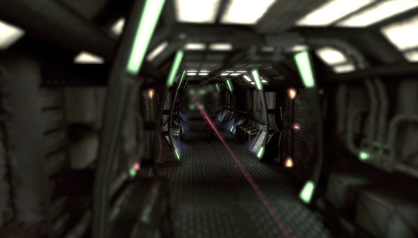
图 21.56 - 您可以注意到游戏角色背后的某些背景会变得模糊。 9. 保存地图保留您的工作进度。
指南 21.13 Camera1（第一相机）镜头拉伸
1. 继续上一指南，打开 Cinematics_Demo 地图。 2. 打开 Kismet，双击 Matinee 序列打开 Matinee 编辑器。 3. 我们将制作以下的效果：当游戏角色远离相机时，Camera1 会放大游戏角色；当相机切换回至 Camera1 时，Camera1 可以自动对焦。 右击 Camera1 组，选择 New Float Property Track。在出现的对话框中，选择 FOVAngle，单击 OK。这将创建一个新的轨迹，用于控制相机 actor 的 FOVAngle 属性。
图 21.57 - 添加一个新的浮动属性轨迹以控制 FOV 角度。 4. 将时间轴滑块移动至游戏角色正对着相机的位置，大致为 Time=1.5，按 Enter 创建一个新关键帧。该关键帧的值将成为相机 FOVAngle 属性中的值，默认为 90.0 度。保持默认值即可，这将为曲线提供一个基点。 5. 将时间轴滑块移动至 Time=3.0，按 Enter 创建一个新关键帧。右击该关键帧，选择 Set value。将该键值设置为 50.0。 6. 将时间轴滑块移动至 Time=5.8（当第二次相机切换发生时），按下 Enter 键创建一个新关键帧。右击该关键帧，选择 Set value。将该键值设置为 25.0。 7. 将时间轴滑块移动至 Time=5.9，按下 Enter 键创建一个新关键帧。右击该关键帧，选择 Set Value。将键值设置为 12.0。 8. 将时间轴滑块移动至 Time=6.1，按下 Enter 键创建一个新关键帧。右击该关键帧，选择 Set value。将该键值设置为 17.5。 9. 将时间轴滑块移动至 Time=6.4，按下 Enter 键创建一个新关键帧。右击该关键帧，选择 Set value。将该键值设置为 13.5。 10. 最后，将时间轴滑块移动至 Time=7.0，按下 Enter 键创建最后一个新关键帧。右击该关键帧，选择 Set value。将键值设置为 15.0。 11. 在 Perspective（透视）视口中确保实时预览为可用状态。在 Matinee 中单击 Play 按钮。您将看到当游戏角色远离第一个相机时，相机平滑地放大游戏角色。第二次相机切换（即再次切换至第一个相机）后，相机会稍稍退后，然后快速放大游戏角色。在下一指南中，放大过程中会加入一点模糊的效果，看上去相机似乎在设法将焦点对准游戏角色。 12. 保存地图保留您的工作进度。 <<<< 指南结束 >>>>
指南 21.14 Camera1 高级景深效果，第一部分：DOF_FocusInnerRadius
1. 继续上一指南，打开 Cinematics_Demo 地图。 2. 打开 Kismet，双击 Matinee 序列打开 Matinee 编辑器。 3. 在本指南中，我们将继续创建自动对焦的效果，方法是修改相机景深效果的范围半径。我们会把半径压缩至 0.0，以模糊整个场景。然后，在下一个指南中，我们将动画处理使用的模糊数量。 右击 Camera1 组，选择 Add New Float Property Track。在出现的对话框中，从下拉列表中选择 DOF_FocusInnerRadius，单击 OK。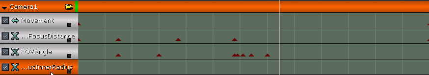
图 21.58 - 创建一个新的浮动属性轨迹，以控制 DOF 内径。 4. 将时间轴滑块移动至 Time=5.8（第二次相机切换时），按下 Enter 键创建一个新关键帧。右击该关键帧，选择 Set value。将值设置为 750.0。 5. 将时间轴滑块移动至 Time=5.9，按下 Enter 键创建一个新关键帧。右击该关键帧，选择 Set value。将键值设置为 0.0。 6. 再次右击关键帧，选择 Interp Mode -> Linear。这将防止曲线在该点与下一个点之间部分降到零以下。这非常必要，因为景深效果的半径应该大于等于零。

*图 21.59 - 将 Interp Mode 设置为 Linear。* 7. 将时间轴滑块移动至 Time=6.4，按下 Enter 键创建一个新关键帧。右击该关键帧，选择 Set value。将键值设置为 0.0。 8. 将时间轴滑块移动至 Time=7.0，按下 Enter 键创建最后一个新关键帧。右击该关键帧，选择 Set value。将键值设置为 750.0。 9. 来回播放检查序列，确保这段时间中的场景进行了模糊处理。 10. 保存地图保留您的进度。 <<<< 指南结束 >>>>
指南 21.15 Camera1 高级景深效果，第二部分：DOF_BlurKernelSize
1. 继续上一指南，打开 Cinematics_Demo 地图。 2. 打开 Kismet，双击 Matinee 序列，打开 Matinee 编辑器。 3. 正如上一指南所述，在本指南中，我们将改变在景深效果中使用的模糊数量，以制作出相机设法对焦的效果。我们要创建的曲线的基本形状为衰减的振荡。 右击 Camera1 组，选择 Add New Float Property Track。在弹出的对话框中，从下拉列表中选择 DOF_BlurKernelSize 属性，单击 OK。
图 21.60 - 创建一个新的属性轨迹以控制模糊的内核大小。 4. 将时间轴滑块移动至 Time=5.8（第二次相机切换时），按下 Enter 键创建一个初始关键帧。右击该关键帧，选择 Set Value。如果键值不为 4.0，将其设置为 4.0。 5. 将时间轴滑块移动至 Time=5.9，按下 Enter 键创建一个新关键帧。右击该关键帧，选择 Set Value。将键值设置为 90.0。这将使场景变得非常模糊。 6. 将时间轴滑块移动至 Time=6.0，按 Enter 创建一个新关键帧。右击该关键帧，选择 Set value。将键值设置为 16.0。 7. 将时间轴滑块移动至 Time=6.1，按下 Enter 键创建一个新关键帧。右击该关键帧，选择 Set Value。将键值设置为 65.0。 8. 将时间轴滑块移动至 Time=6.25，按下 Enter 键创建一个新关键帧。右击该关键帧，选择 Set value。将键值设置为 8.0。 9. 将时间轴滑块移动至 Time=6.4，按下 Enter 键创建一个新关键帧。右击该关键帧，选择 Set Value。将该键值设置为 25.0。 10. 将时间轴滑块移动至 Time=7.0，按下 Enter 键创建最后一个新关键帧。右击该关键帧，选择 Set value。将键值设置回 4.0。 11. 在 Perspective（透视）视口中确保实时预览为可用状态。在 Matinee 中单击 Play 按钮。您也可以在场景中制作出扭曲或其它改变。

*图 21.61 - 场景变模糊后，给人以别样的感觉。.* 12. 保存地图保留您的工作进度。 <<<< 指南结束 >>>>
指南 21.16 Camera1（第一相机）镜头拉伸
1. 继续上一指南，打开 Cinematics_Demo 地图。 2. 打开 Kismet，双击 Matinee 序列打开 Matinee 编辑器。 3. 在本指南中，我们将使第二个相机紧紧跟随游戏角色，并放大游戏角色；当游戏角色靠近相机时，缩小游戏角色。 右击 Camera2 组，选择 Add New Float Property Track。在弹出的对话框中，从下拉列表中选择 FOVAngle property 属性，单击 OK。
图 21.62 - 新建的轨迹将控制 Camera2 的 FOV 角度。 4. 将时间轴滑块移动至 Time=3.7（第一次相机切换，并且第二个相机开始激活时），按下 Enter 键创建一个新关键帧。 5. 右击该关键帧，选择 Set value。将键值设置为 10.0。这将使游戏角色充满整个视图。 6. 现在，将时间轴滑块移动至 Time=5.8 （第二次相机切换，并且第二个相机去激活时），再次按下 Enter 键创建一个新关键帧。 7. 右击新关键帧，选择 Set Value。将该键值设置为 90.0。这是相机视野的默认值。这样，当游戏角色靠近相机时会缩小。

*图 21.63 - 在 Time=5.8 时，相机将游戏角色缩小至正常大小。* 8. 单击轨迹右下角的小方块，将轨迹的曲线信息传递至曲线编辑器中。单击工具栏中的 Toggle Curve Editor 按钮，打开曲线编辑器。 9. 在曲线编辑器中选中曲线的第二个点，出现切线柄。按住 Ctrl 键，单击左边的切线柄并向下拖动，使曲线的形状成为U的右半部分，而不是 S 形。这将使开始的缩放速度较慢，而当游戏角色靠近时，缩放速度加快。

*图 21.64 - 将曲线调整成如图所示的形状。* 10. 在 Perspective（透视）视口中确保实时预览为可用状态，在 Matinee 中单击 Play 按钮预览。您也可以做出其它任何调整。 11. 保存地图保留您的进度。 <<<< 指南结束 >>>>
指南 21.17 Camera2（第二相机）景深效果
1. 继续上一指南，打开 Cinematics_Demo 地图。 2. 本指南将继续设置第二个相机，主要是设置景深效果的聚焦距离，过程和第一个相机类似。我们将使用 Kismet 网络来记录游戏角色和第二个相机之间的距离。 在视口中选择第二个相机，打开 Kismet。 3. 右击与 Get Distance 动作的 B 端相连的变量，选择 Assign CameraActor_1 to Object Variable(s)。
图 21.65 - 现在您可以得到带骨骼的网格物体与 Camera2 之间的距离了。 4. 现在，您可以像前面一样，在编辑器中试玩游戏，并记录下屏幕上的距离值了。您需要记下每次相机切换时的值。以下值可供参考：
- 800.0
- 200.0
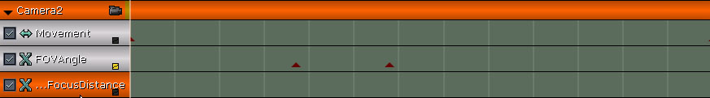
*图 21.66 - 添加一个新的浮动属性轨迹，以控制 DOF 聚焦距离。* 7. 将时间轴滑块移动至 Time=3.7（第一次相机切换时），按下 Enter 键创建一个初始关键帧。 8. 右击该关键帧，选择 Set value。将该键值设置为 800.0。 9. 将时间轴滑块移动至 Time=5.8 （第二次相机切换时），按下 Enter 键创建一个新关键帧。 10. 右击该关键帧，选择 Set value。将键值设置为 200.0。 11. 在 Perspective（透视）视口中确保实时预览为可用状态。在 Matinee 中单击 Play 按钮。若有必要，您也可以对关键帧值进行调整。

*图 21.67 - Camera2 将展示出景深效果。* 12. 保存地图保留您的进度。 <<<< 指南结束 >>>>
指南 21.18 重点光照，第一部分：放置光源
1. 继续上一指南，打开 Cinemtatics_Demo 地图。 2. 在“利用光照分离画面”一节中，讨论了将游戏角色不着痕迹地从环境中凸显出来的方法，使用镶边光照是其中之一。在上面的指南中，您可能已经注意到，由于场景太黑或色调有限，有时游戏角色几乎溶入了环境中。在本指南中，我们将加入三个加强光源，以强调出游戏角色的边缘，使游戏角色与背景区分开。 打开 Generic Browser，选择 Actor Classes 选项卡。在 Actor -> Light -> PointLight 中选择 PointLightMovable 类。然后，在视口中右击，选择 Add New PointLightMovable Here。
图 21.68 - 创建一个新的PointLightMovable。 3. 将此光源放置在走廊的尽头，贴近游戏角色的右后方。 注意： 以上的指导与游戏角色栅格的朝向相关。 4. 选中光源，按 F4 打开其属性。 5. 展开 LightingChannels，确保只选中了 Cinematic1 频道。因为我们只想要这些光源影响游戏角色。在下一步中，我们将设置 SkeletalMeshActorMAT，使它也使用该频道。 6. 选中游戏角色，按 F4 打开其属性。展开 LightingChannels，选择 Cinematic1 频道。其他频道保持原样。 7. 按住 Alt 键创建一个光源副本，将这个光源沿 Y 轴负方向移动 224 个单位。这样，在游戏角色的左后方就有了一个新的光源。 8. 再按住 Alt 键创建一个光源副本，将这个新光源沿 X 轴负方向移动 544 个单位。这样，在游戏角色的左前方就有了一个新的光源。
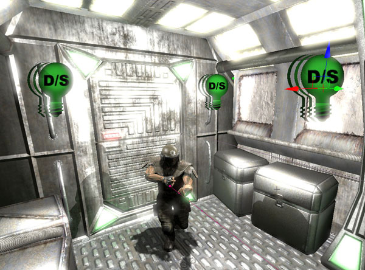
图 21.69 - 游戏角色周围有三个光源，冲淡了周围环境。 9. 现在，我们要将三个光源与游戏角色相关联。这样当他移动时，光源也会随之移动。同时选中三个光源，打开属性窗口。单击 Lock to Selected Actors 按钮，然后选中游戏角色。回到属性窗口，展开 Attachment，单击 Use Current Selection 按钮设置其 Base 属性。 10. 保存地图保留您的进度。 <<<< 指南结束 >>>>
指南 21.19 重点光照，第二部分：左后方亮度轨迹
1. 继续上一指南，打开 Cinematics_Demo 地图。 2. 打开 Kismet，双击 Matinee 序列，打开 Matinee 编辑器。 3. 在本指南中，我们将开始创建轨迹以控制加强光线的亮度。因为在同一个时刻，只需要一个光源照射在栅格上。 选中游戏角色前方的光源。然后， 右击组/轨迹列表的空白区域，选择 Add New Group。将新建的组命名为 RimLightLeftRear，单击 OK。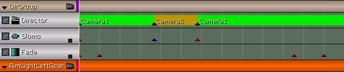
图 21.70 - 创建一个名为 RimLightLeftRear 的新组。 4. 右击 RimLightLeftRear 组，选择 Add New Float Property Track。在出现的对话框中选择 Brightness 属性，单击 OK。
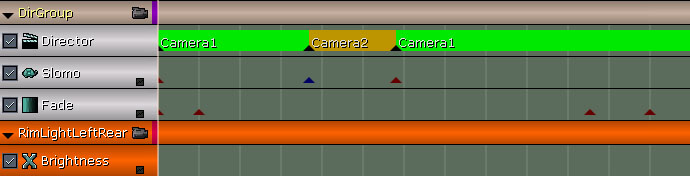
图 21.71 - 新建的轨迹将控制亮度。 5. 时间轴滑块位于 Time=0.0 的位置，按下 Enter 键创建一个初始关键帧。右击该关键帧，选择 Set value。将键值设置为 0.5。 6. 将时间轴滑块移动至 Time=1.5，按下 Enter 键创建一个新关键帧。右击该关键帧，选择 Set value。将该键值设置为 0.0。当游戏角色靠近相机时，光线将逐渐减弱至消失。 7. 保存地图保留您的进度。 <<<< 指南结束 >>>>
指南 21.20 重点光照，第三部分：右后方亮度轨迹
1. 继续上一指南，打开 Cinematics_Demo 地图。 2. 打开 Kismet，双击 Matinee 序列，打开 Matinee 编辑器。 3. 在本指南中，我们将继续设置控制加强光线亮度的轨迹。 选中游戏角色右后方的光源。然后， 右击组/轨迹列表的空白区域，选择 Add New Group。将新建的组命名为 RimLightRightRear，单击 OK。
*图 21.72 - 为右后方的镶边光源创建一个新组。* 4. 右击 RimLightRightRear 组，选择 Add New Float Property Track。在出现的对话框中选择 Brightness 属性，单击 OK。

*图 21.73 - 新建的轨迹将控制亮度。* 5. 时间轴滑块位于 Time=1.5 的位置， 按下 Enter 键创建一个初始关键帧。右击该关键帧，选择 Set value。将键值设置为 0.0。 6. 将时间轴滑块移动至 Time=3.0，按下 Enter 键创建一个新关键帧。右击该关键帧，选择 Set value。将键值设置为 0.5。 7. 再次右击关键帧，选择 Interp Mode -> Constant，在此关键帧和下个关键帧之间创建一条平直的曲线。

*图 21.74 - 从此关键帧到下个关键帧之间，曲线保持为常值。* 8. 将时间轴滑块移动至 Time=3.7，按下 Enter 键创建一个新关键帧。右击该关键帧，选择 Set value。将该键值设置为 0.0。 9. 右击该关键帧，再次选择 Interp Mode -> Constant，在此关键帧和下个关键帧之间创建一条平直的曲线。 10. 将时间轴滑块移动至 Time=5.8，按下 Enter 键创建一个新关键帧。右击该关键帧，选择 Set value。将该键值设置为 0.5。 11. 保存地图保留您的工作进度。 <<<< 指南结束 >>>>
指南 21.21 重点光照，第四部分：前方亮度轨迹
1. 继续上一指南，打开 Cinematics_Demo 地图。 2. 打开 Kismet，双击 Matinee 序列，打开 Matinee 编辑器。 3. 在本指南中，我们将继续设置控制加强光线亮度的轨迹。 选中游戏角色前方的光源。然后， 右击组/轨迹列表的空白区域，选择 Add New Group。将新建的组命名为 RimLightFront，单击OK。
*图 21.57 - 为前方的镶边光源创建一个新组。* 4. 右击 RimLightFront 组，选择 Add New Float Property Track。在出现的对话框中选择 Brightness 属性，单击 OK。 5. 时间轴滑块位于 Time=0.0 的位置，按下 Enter 键创建一个初始关键帧。右击该关键帧，选择 Set value。将键值设置为 0.0。 6. 右击该关键帧，选择 Interp Mode -> Constant。 7. 将时间轴滑块移动至 Time=3.7，按下 Enter 键创建一个新关键帧。右击该关键帧，选择 Set value。将键值设置为 0.5。 8. 再次右击关键帧，选择 Interp Mode -> Linear。 9. 将时间轴滑块移动至 Time=5.4，按下 Enter 键创建一个新关键帧。右击该关键帧，选择 Set value。确保该键值设置为 0.5。 10. 将时间轴滑块移动至 Time=5.8，按下 Enter 键创建一个新关键帧。右击 这个键选择 Set 值。将键值设置为 0.0。 11. 在 Perspective（透视）视口中确保实时预览为可用状态。在 Matinee 中单击 Play 按钮。您可以看到在过场动画播放时，游戏角色的轮廓变亮了。

*图 21.76 - 现在游戏角色被照亮了。* 12. 保存地图保留您的进度。 <<<< 指南结束 >>>>
指南 21.22 爆炸粒子特效，第一部分：放置发射器
1. 继续上一指南，打开 Cinematics_Demo 地图。 2. 现在，我们已经成功搭建了过场动画的骨骼，但仍是非常简陋的。仍然没形成真实场景。我们需要为骨骼加上血肉和动作。前面的指南中曾提到了爆炸。现在，我们要添加一些爆炸，使序列变得更具动感，更加激动人心。 在通用浏览器中，从 CinematicsDemoContent 文件包中选择 part_explosion 资产。然后，在视口中右击，选择 Add Actor -> Emitter：part_explosion。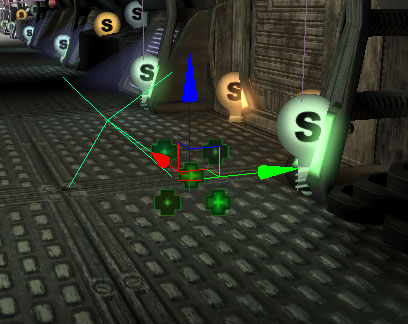
*图 21.77 - 添加一个新的发射器 actor。* 3. 接下来的问题是在哪里放置发射器。发射器的位置由爆炸发生的时刻决定。这是一个很主观的问题，取决于个人的感觉。在以下的指南中，爆炸时间是提前决定好的。您也完全可以按照自己的想法去实践。 第一次爆炸发生在游戏角色经过控制箱时，位于走廊的中点。在走廊上沿路放有控制箱，控制箱面前有红色灯或绿色灯指示。第一个发射器就放在这里。 将发射器放置在（俯视口中）走廊左边的控制箱上，当游戏角色经过时应该位于游戏角色右边。打开 Matinee，将时间轴滑块移动至 Time=4.3。然后，在视口中，您可以看到控制箱位于游戏角色的右边。如果游戏角色没有到达控制箱或者已经超过了控制箱，关闭 Matinee，重新调整带骨骼的网格物体在X轴上的位置，以改变他的起点位置。不过，您可能更希望调整相机的位置。

图 21.78 - 将发射器放在控制箱上。 4. 选中了发射器后，按 F4 打开其属性。取消选择 bAutoActivate，这样，发射器不会一开始就喷射粒子。在后面的指南中，发射器将通过 Matinee 进行触发。 5. 选中了发射器后，在 UnrealEd 界面的底部将 DrawScale3D 设置为 4.0。这将使爆炸的范围为它原来大小的四倍。 6. 按住Alt键，将发射器横拖过走廊创建一个副本。现在，将时间轴滑块移动至 Time=4.7，找到此时游戏角色的位置。在他的左边有一根支撑柱，其后有一些金属管。将新建的发射器放在支柱和管道的相交点。
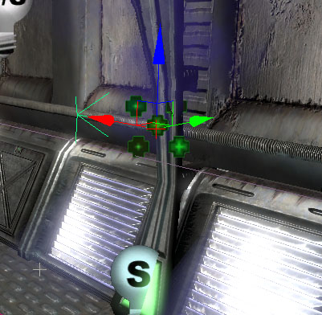
图 21.79 - 如图所示放置第二个发射器。 7. 按住 Alt 键，将发射器拖回走廊的另一边创建第二个副本。将时间轴滑块移动至 Time=5.075，在视口中找到此时游戏角色的位置。在他的右边应该有一排四个终端台。将发射器放在第二个终端台处。

图 21.80 - 第三个发射器应该放在第二个终端台处。 8. 按住 Alt 键，将发射器拖到走廊的另一边创建第四个发射器。将时间轴滑块移动至 Time=5.45，在视口中找到此时游戏角色的位置。在游戏角色左边，另有一根支撑柱，其后有一根管道延伸至了天花板。将发射器最后 64 个单位放置在通道与支撑柱相交的位置下方。将发射器向下移动 64 个单位，这是因为从目前的角度看上去发射器完全祼露。这样可以确保玩家能够看到。

图 21.81 - 将第四个发射器放在支撑柱和管道的相交点。 9. 保存地图保留您的进度。 <<<< 指南结束 >>>>
指南 21.23 爆炸粒子特效，第二部分：粒子触发轨迹
1. 继续上一指南，打开 Cinematics_Demo 地图。 2. 打开 Kismet，双击 Matinee 序列打开 Matinee 编辑器。 3. 选中最后一个发射器。右击 Groups/Tracks 列表中的空白处，选择 Add New Group。将新建的组命名为 ExplosionEmitter1，单击 OK。 4. 右击 ExplosionEmitter1 组，选择 Add New Particle Toggle Track。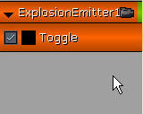
图 21.82 - 新建的 toggle 轨迹将控制粒子的开始和停止发射。 5. 将时间轴滑块移动至 Time=4.3，按下 Enter 键创建一个新关键帧。出现一个对话框，从列表中选择 On，单击 OK。这将使发射器开始发射粒子。 6. 选中放置在金属管和支撑柱交点处的发射器，即第二个发射器。右击 Groups/Tracks 列表中的空白处，选择 Add New Group。将新建的组命名为 ExplosionEmitter2，单击 OK。 7. 右击 ExplosionEmitter2 组，选择 Add New Particle Toggle Track。

图 21.83 - 为第二个发射器添加一个新组和开关轨迹。 8. 将时间轴滑块移动至 Time=4.7，按下 Enter 键创建一个新关键帧。出现一个对话框，从列表中选择 On，单击 OK。这将使发射器开始发射粒子。 9. 选中下一个位于终端台的发射器。右击 Groups/Tracks 列表中的空白处，选择 Add New Group。将新建的组命名为 ExplosionEmitter3，单击 OK。 10. 右击 ExplosionEmitter3 组，选择 Add New Particle Toggle Track。

图 21.84 - 第三个组也有了一个组和 toggle 轨迹。 11. 将时间轴滑块移动至 Time=5.075，按下 Enter 键创建一个新关键帧。出现一个对话框，从列表中选择 On，单击 OK。这将使发射器开始发射粒子。 12. 选中最后一个发射器。右击 Groups/Tracks 列表中的空白处，选择 Add New Group。将新建的组命名为 ExplosionEmitter4，单击 OK。 13. 右击 ExplosionEmitter4 组，选择 Add New Particle Toggle Track。

图 21.85 - 第四个发射器也有了一个轨迹。 14. 将时间轴滑块移动至 Time=5.45，按下 Enter 键创建一个新关键帧。出现一个对话框，从列表中选择 On，单击 OK。这将使发射器开始发射粒子。 15. 在 Perspective（透视）视口中确保实时预览为可用状态。在 Matinee 中单击 Play 按钮。游戏角色经过发射器时，爆炸效果会触发。

图 21.86 - 爆炸发生了。 16. 现在还有一个小问题。如果循环播放，您将发现在接下来的观察中，发射器看上去没有起作用。它们只是冒烟，而不再产生爆炸了。 要修改这个问题非常简单，只需要在序列开始时关闭每个发射器即可。在每个发射器的 Time=0 时刻各创建一个关键帧，在序列开始时关闭它们。 17. 保存地图保留您的工作进度。 <<<< 指南结束 >>>>
指南 21.24 爆炸光源，第一部分：放置光源
1. 继续上一指南，打开 Cinematics_Demo 地图。 2. 现在当游戏角色经过时，便会引发爆炸。但还差一些东西，例如爆炸时发出的光亮和声音。在本指南中，我们将在每个发射器处放置一些光源，这些光源的亮度属性由轨迹控制。下面，我们就来创建轨迹。在下个指南中，我们将添加声音。 打开 Generic Browser，选择 Actor Class。然后，选择 Actor -> Light -> PointLight 下的 PointLightToggleable。 3. 在视窗中，右击第一个发射器所在的控制箱，选择 Add PointLightToggleable Here。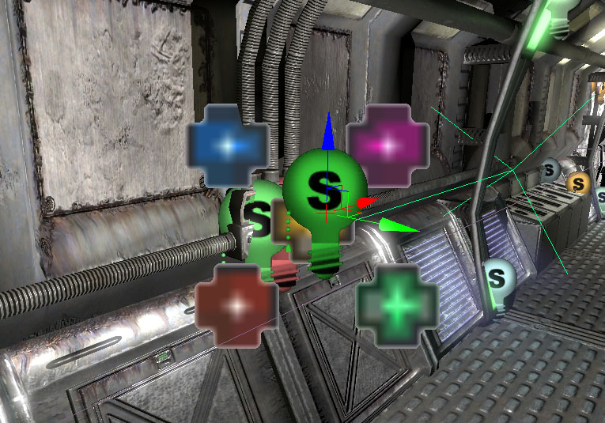
图 21.87 - 在第一个发射器处创建一个可开关的点光源。 4. 选中光源，按 F4 打开其属性。设置 LightColor 属性如下：
- A: 0
- B: 0
- G: 128
- R: 255
指南 21.25 爆炸光源，第二部分：亮度轨迹
1. 继续上一指南，打开 Cinematics_Demo 地图。 2. 打开 Kismet，双击 Matinee 序列，打开 Matinee 编辑器。 3. 选中第一个爆炸发射器处的光源。然后，右击 Matinee 中的 Groups/Tracks 列表中的空白区域，选择 Add New Group。将新建的组命名为 ExplosionLight1，单击 OK。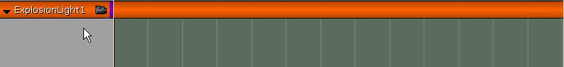
图 21.88 - 为第一处爆炸发出的光创建一个新组。 4. 在组里新建一个浮动属性轨迹，将其属性设置为亮度。 5. 将时间轴滑块移动至 Time=4.3，按下 Enter 键创建一个关键帧。右击该关键帧，选择 Set value。将键值设置为 0.0。 6. 将时间轴滑块移动至 Time=4.35，按下 Enter 键创建一个关键帧。右击该关键帧，选择 Set value。将该键值设置为 2.0。 7. 将时间轴滑块移动至 Time=4.7，按下 Enter 键创建一个关键帧。右击该关键帧，选择 Set value。将该键值设置为 0.0。 8. 选中 ExplosionLight1 组并右击。选择 Duplicate Group，将新建的组命名为 ExplosionEmitter2。
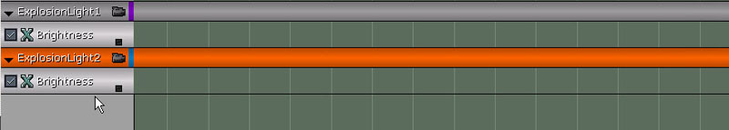
图 21.89 - 复制组得到一个副本。 9. 在视口中选中第三个爆炸发射器处的光源。在 Kismet 中，右击 ExplosionLight2 端，选择 New Object Var Using PointLightToggleable_2。 注意： 光源实际的名称可能和以上所述的不符合。 10. 将 ExplosionLight2 组的关键帧移动到以下的时刻（时刻和关键帧从左到右一一对应）
- First Key: Time = 4.7
- Second Key: Time = 4.75
- Third Key: Time = 5.075

图 21.90 - 这将偏置第二处爆炸的光源。 11. 选择 ExplosionLight2，右击。选择 Duplicate Group，将新建的组命名为 ExplosionEmitter3。 12. 在视口中选中第三个爆炸发射器处的光源。在 Kismet 中，右击 ExplosionLight3 端，选择 New Object Var Using PointLightToggleable_3。 注意： 光源实际的名称可能和以上所述的不符合。 13. 将 ExplosionLight3 组的关键帧移动到以下的时刻（时刻和关键帧从左到右一一对应）：
- First Key: Time = 5.075
- Second Key: Time = 5.125
- Third Key: Time = 5.45

图 21.91 - 复制 Group，得到一个副本。 15. 在视口中选中第三个爆炸发射器处的光源。在 Kismet 中，右击 ExplosionLight4 端，选择 New Object Var Using PointLightToggleable_0。 注意： 光源实际的名称可能和以上所述的不符合。 16. 将 ExplosionLight4 组的关键帧移动到以下的时刻（时刻和关键帧从左到右一一对应）
- First Key: Time = 5.45
- Second Key: Time = 5.5
- Third Key: Time = 5.85
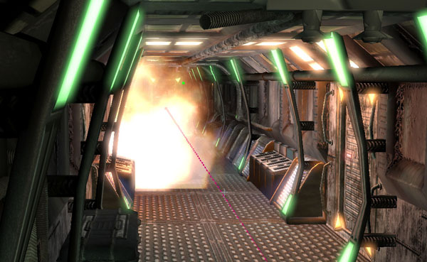
图 21.92 - 爆炸将照亮整个场景。 18. 保存地图保留您的进度。 <<<< 指南结束 >>>>
指南 21.26 爆炸声音
1. 继续上一指南，打开 Cinematics_Demo 地图。 2. 打开 Kismet，双击 Maitnee 序列打开 Matinee 编辑器。 3. 在 Generic Browser 中，从 CinematicDemoContent 文件包中选择 soundCue_explosion 资源。 4. 回到 Matinee 中，右击 Groups/Tracks 列表中的空白区域，选择 Add new Group。将新建的组命名为 ExplosionSounds，单击 OK。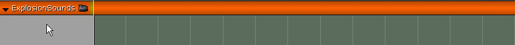
图 21.93 - 创建一个名为 ExplosionSounds 的新组。 5. 右击 ExplosionSounds 组，选择 Add New Sound Track。 6. 将时间轴滑块移动至 Time=4.3，按下 Enter 键创建一个新关键帧。右击该关键帧，选择 Set Sound Pitch。将音调设置为 0.5。 7. 右击 ExplosionSounds 组，选择 Add New Sound Track。 8. 将时间轴滑块移动至 Time=4.7，按下 Enter 键创建一个新关键帧。右击该关键帧，选择 Set Sound Pitch。将音调设置为 0.5。 9. 右击 ExplosionSounds 组，选择 Add New Sound Track。 10. 将时间轴滑块移动至 Time=5.075，按下 Enter 键创建一个新关键帧。右击该关键帧，选择 Set Sound Pitch。将音调设置为 0.5。 11. 右击 ExplosionSounds 组，选择 Add New Sound Track。 12. 将时间轴滑块移动至 Time=5.45，按下 Enter 键创建一个新关键帧。右击该关键帧，选择 Set Sound Pitch。将音调设置为 0.5。
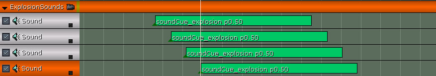
图 21.94 - 四个爆炸声将单独播放。 13. 在 Perspective（透视）视口中确保实时预览为可用状态。在 Matinee 中单击 Play 按钮。爆炸声将伴随爆炸响起。 14. 保存地图保留您的进度。 <<<< 指南结束 >>>>
指南 21.27 躲避动作的动画轨迹，第一部分：关键帧创建
1. 继续上一指南，打开 Cinematics_Demo 地图。 2. 打开 Kismet，双击 Matinee 序列，打开 Matinee 编辑器。 3. 现在我们要在爆炸发生时向基本动画中加入游戏角色躲避的动画。 右击 Grunt 组，选择 Add New Anim Control Track。从出现的对话框的列表中选择 FullBody，单击 OK。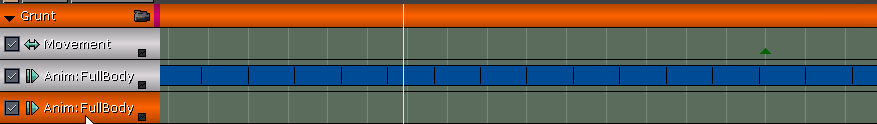
图 21.95 - 在 Grunt 组中添加一个新的动画控制轨迹。 4. 将时间轴滑块移动至 Time=4.3，按下 Enter 键创建一个新关键帧。从出现的对话框的列表中选择 DvLt01 动画，单击 OK。右击新关键帧，选择 Set Play Rate。将动画的播放速度设置为 3.0。这将加快动画的播放速度。 5. 将时间轴滑块移动至 Time=4.7，按下 Enter 键创建一个新关键帧。从出现的对话框的列表中选择 DvRt01 动画，单击 OK。右击新关键帧，选择 Set Play Rate。将动画的播放速度设置为 3.38。 6. 将时间轴滑块移动至 Time=5.075，按下 Enter 键创建一个新关键帧。从出现的对话框的列表中选择 DvLt01 动画，单击 OK。右击新关键帧，选择 Set Play Rate。将动画的播放速度设置为 3.25。 7. 将时间轴滑块移动至 Time=5.45，按下 Enter 键创建一个新关键帧。从出现的对话框的列表中选择 DvFd01 动画，单击 OK。右击新关键帧，选择 Set Play Rate。将动画的播放速度设置为 3.3。 8. 将时间轴滑块移动至 Time=5.83，按下 Enter 键创建一个新关键帧。从出现的对话框的列表中选择 Run_Fwd_Rdy_01 动画，单击 OK。右击新关键帧，选择 Set Play Rate。将动画的播放速度设置为 0.25。

图 21.96 - 最后一个动画添加好了。 9. 保存地图保留您的工作进度。 <<<< 指南结束 >>>>
指南 21.28 躲避动作的动画轨迹，第二部分：曲线调节
1. 继续上一指南，打开 Cinematics_Demo 地图。 2. 打开 Kismet，双击 Matinee 序列，打开 Matinee 编辑器。 3. 现在，播放单独动画的关键帧创建好了。我们需要调整这些轨迹曲线，将它们与基本的动画轨迹区分开来。 单击轨迹右下角的小方块，将第二条 Anim Control 轨迹的曲线信息传递至曲线编辑器中。单击工具栏中的 Toggle Curve Editor 按钮，打开曲线编辑器。现在，曲线看上去是一条直线。 4. 按住 Ctrl 键，同时左击曲线，在曲线的 Time=0.0 处创建一个值为 0.0 的点。选中该点，单击曲线编辑器的工具栏中的 Constant（常量） 切线按钮。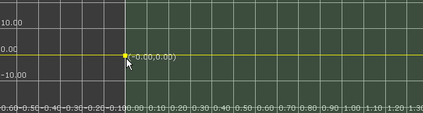
图 21.97 - 在 Time=0.0 处创建一个常量关键帧。 5. 按住 Ctrl 键，同时左击曲线，在曲线的 Time=4.3 处创建一个点。右击点，选择 Set value。将点的值设置为 1.0。该点处于选中状态，单击曲线编辑器的工具栏中的 Linear（线性型）切线按钮。 这样，从 Time=4.3 处开始（即第一次爆炸时），基本动画的基础上加上了该轨迹的动画。

图 21.98 - 轨迹的动画将叠加在之前创建的基本播放轨迹之上。 6. 按住 Ctrl 键，同时左击曲线，在曲线的 Time=5.75 处创建一个值为 1.0 的点。 7. 按住 Ctrl 键，同时左击曲线，在曲线的 Time=5.85 处创建一个点。右击这个点，选择 Set value。将点的值设置为 0.0。 这样，从 Time=5.85 处开始（即第二次爆炸时），基本动画的基础上加上了该轨迹的动画。 8. 按住 Ctrl 键，同时左击曲线，在曲线的 Time=10.0 处创建一个点。右击这个点，选择 Set value。将点的值设置为 1.0。 这样可以将轨迹的播放缓慢地叠加在基本动画上，制造出游戏角色慢动作的效果。
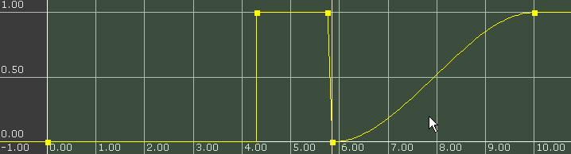
图 21.99 - 曲线最终看上去如图所示。 9. 在 Perspective（透视）视口中确保实时预览为可用状态。在 Matinee 中单击 Play 按钮。游戏角色沿走廊移动时，执行奔跑的动作。不过当爆炸发生时，他会滚到左边，然后滚向右边，再滚到左边，最后来了一次前滚翻。爆炸后，游戏角色的动画同样由全速变为了慢速。 10. 保存地图保留您的进度。 <<<< 指南结束 >>>>
指南 21.29 附加动画轨迹，第一部分：关键帧放置
1. 继续上一指南，打开 Cinematics_Demo 地图。 2. 打开 Kismet，双击 Matinee 序列，打开 Matinee 编辑器。 3. 现在，我们在基础动画上添加了躲避动作。我们将继续在四次向旁边翻滚的动作中加上前滚翻的动作。这样，就给了翻滚动作向前的推动力，因为游戏角色的惯性会使他向前运动。 右击 Grunt 组，选择 Add New Anim Control Track。从出现的对话框的列表中选择 FullBody，单击 OK。
图 21.100 - 在 grunt 组中加上另一个动画控制轨迹。 4. 将时间轴滑块移动至 Time=4.3，按下 Enter 键创建一个新关键帧。从出现的对话框的列表中选择 DvFd01 动画，单击 OK。右击新关键帧，选择 Set Play Rate。将动画的播放速度设置为 3.0。 5. 将时间轴滑块移动至 Time=4.7，按下 Enter 键创建一个新关键帧。从出现的对话框的列表中选择 DvFd01 动画，单击 OK。右击新关键帧，选择 Set Play Rate。将动画的播放速度设置为 3.38。 6. 将时间轴滑块移动至 Time=5.075，按下 Enter 键创建一个新关键帧。从出现的对话框的列表中选择 DvFd01 动画，单击 OK。右击新关键帧，选择 Set Play Rate。将动画的播放速度设置为 3.25。 7. 保存进度。 <<<< 指南结束 >>>>
指南 21.30 附加动画轨迹，第二部分：曲线调节
1. 继续上一指南，打开 Cinematics_Demo 地图。 2. 打开 Kismet，双击 Matinee 序列，打开 Matinee 编辑器。 3. 播放附加动画的关键帧已经创建好了，现在需要调整轨迹的曲线，使其动画添加在躲避动作的动画轨迹上。 单击轨迹右下角的小方块，将第三条 Anim Control 轨迹的曲线信息传递至曲线编辑器中。单击工具栏中的 Toggle Curve Editor 按钮，打开曲线编辑器。现在，曲线看上去是一条直线。
图 21.101 - 曲线的起始处如图所示。 4. 在曲线的 Time=4.3 处创建一个值为 0.0 的点。选中该点，单击曲线编辑器的工具栏中的 Constant（常量） 切线按钮。 5. 按住 Ctrl 键，同时单击曲线，在 Time=4.4 处创建一个点。右击点，选择 Set value。将点的值设置为 0.5。 6. 按住 Ctrl 键，同时单击曲线，在 Time=4.7 处创建一个点。右击点，选择 Set value。将点的值设置为 0.0。 7. 按住 Ctrl 键，同时单击曲线，在 Time=4.8 处创建一个点。右击这个点，选择 Set value。将点的值设置为 0.375。 8. 按住 Ctrl 键，同时单击曲线，在 Time=5.075 处创建一个点。右击这个点，选择 Set value。将点的值设置为 0.0。 9. 按住 Ctrl 键，同时单击曲线，在 Time=5.175 处创建一个点。右击点，选择 Set value。将点的值设置为 0.25。 10. 按住 Ctrl 键，同时单击曲线，在 Time=5.4 处创建一个点。右击这个点，选择 Set value。将点的值设置为 0.0。

图 21.102 - 最终的曲线看上去如图所示。 11. 在 Perspective（透视）视口中确保实时预览为可用状态。在 Matinee 中单击 Play 按钮。不同之处非常细微，但是它增添了动画的可信度。爆炸后，游戏角色的动画同样由全速变为了慢速。 12. 保存地图保留您的进度。 <<<< 指南结束 >>>>
指南 21.31 结束游戏角色的运动
1. 继续上一指南，打开 Cinematics_Demo 地图。 2. 打开 Kismet，双击 Matinee 序列，打开 Matinee 编辑器。 3. 现在，游戏角色躲避爆炸的动作已完成。我们接下来要调整游戏角色的动作轨迹，以便和这些动画相匹配。确定选中了动作轨迹。 将时间轴滑块移动至 Time=4.3，按下 Enter 键创建一个新关键帧。选中该关键帧，在视窗中移动游戏角色，使游戏角色位于距走廊中央位置约 48 个单位的右方。这样可使游戏角色离爆炸的位置更近。
图 21.103 - 第一个关键帧将游戏角色移动到了右方。 4. 将时间轴滑块移动至 Time=4.7，按下 Enter 键创建一个新关键帧。选中该关键帧，在视口中移动游戏角色，使游戏角色位于距走廊中央位置约 48 个单位的左方。

图 21.104 - 第二个关键帧将游戏角色移动到了左方。 5. 将时间轴滑块移动至 Time=5.075，按下 Enter 键创建一个新关键帧。选中该关键帧，在视窗中移动游戏角色，使游戏角色位于距走廊中央位置约 48 个单位的右方。 6. 将时间轴滑块移动至 Time=5.45，按下 Enter 键创建一个新关键帧。选中该关键帧，在视口中移动游戏角色，使游戏角色位于距走廊中央位置约 48 个单位的左方。 7. 将时间轴滑块移动至 Time=5.75，按下 Enter 键创建一个新关键帧。选中该关键帧，在视口中移动游戏角色，使游戏角色位于走廊的中央。
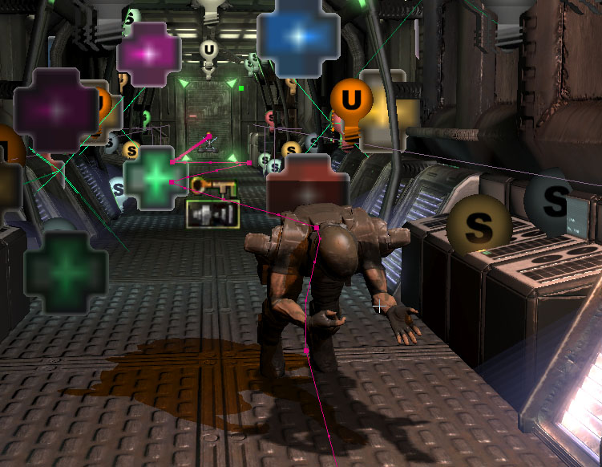
图 21.105 - 将游戏角色移回走廊的中央。 8. 在 Perspective（透视）视口中确保实时预览为可用状态，在 Matinee 中单击 Play 按钮。当游戏角色沿走廊跑动时，他看上去确是在躲避爆炸或被爆炸抛开。 9. 保存地图保留您的进度。 <<<< 指南结束 >>>> 最后，您可以看到创建过场动画的学问并不是一成不变的。即使您一直追随本指南进行学习，也会常常发现自己的风格可能会更有意义而做出一些微小的甚至大面积的修改。这取决于物体的摆放位置和动作的计时，当然最重要的还是您自己的风格。请大胆地尝试吧，按自己的意愿进行调节规划，当然请将其付诸实践。另外，若想成为一位成功的情节设计师，请记住即使在 Unreal 中，您在本质上还是一位动画摄影师。通过视频学习动画摄影与讲故事的本领将会受益匪浅。